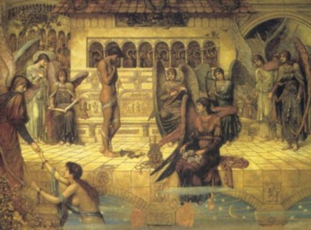
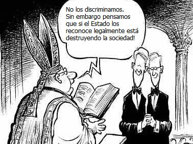

No todos los días sube un nuevo Papa al trono del Vaticano. Esta es una de las razones válidas para cientos de reporteros esperaran el “humo blanco”anunciando el nuevo jerarca de la Iglesia Católica. En esta ocasión la frase de que “quien entra al cónclave como papa sale como cardenal” no se cumplió, pues el cardenal alemán Joseph Ratzinger, el candidato más opcionado por los analizadores fue el escogido. En Europa las reacciones en contra de esta elección se han escuchado desde los humanistas seculares y aún desde católicos progresistas que ven en Joseph Ratzinger un retrógrado más en la institución que avaló la Inquisición.
Todo lo que hasta ahora se ha mencionado es ya por todos conocido, sin embargo, deseo llamar la atención sobre la “amnesia histórica” de los dirigentes católicos, pues el señor Ratzinger habla de “laicismo, libertad religiosa, y libertades civiles ignorando las opiniones dadas por papas anteriores sobre las mismas cuestiones, mostrando una cara maquillada de tolerancia para ocultar el horrible, y muchas veces sangriento pasado de una Iglesia que tiene la desfachatez de llamarse santa.
Laicismo y Libertad Religiosa
En una entrevista concedida al diario «La Reppublica», al ahora Benedicto XVI se puede leer:
La laicidad justa es la libertad de religión. El Estado no impone una religión, sino que deja espacio libre a las religiones con una responsabilidad hacia la sociedad civil, y por tanto, permite a estas religiones que sean factores en la construcción de la vida social.
¿Fue esta siempre la opinión de la “Santa Iglesia”?
La tolerancia igualitaria de todas las religiones… es lo mismo que el ateísmo.
—Papa León XIII (1810-1903), papa (1878-1903), “Imortale Dei”
“Se propuso una vez que todas las doctrinas religiosas deberían ser libres y sus ceremonias ejecutadas en público. Nosotros los católicos hemos rechazado este artículo como contrario a la ley canónica católica romana.”
—Papa Pío VII, 1742-1823), papa (1800-1823)
“Decretamos y ordenamos que desde ahora, y para siempre, los cristianos no deberán comer o beber con judíos; ni admitirlos a fiestas, ni cohabitar con ellos, ni bañarse con ellos. Los cristianos no deberán permitir que los judíos tengan honores civiles por encima de los cristianos, o que ejerzan un cargo público en el Estado. Los judíos no podrán ser mercaderes, cobradores de impuestos, ni agentes de compra o venta de los productos y bienes de los cristianos, ni sus procuradores, contadores o abogados en asuntos matrimoniales, ni obstetras; ni podrán asociarse con cristianos. Ningún cristiano puede dejar o heredar nada en su testamento a judíos o a sus congregaciones. Se prohíbe a los judíos erigir nuevas sinagogas. Están obligados a pagar anualmente una décima parte de sus bienes y posesiones. Contra ellos los cristianos pueden testificar, pero el testimonio de judíos contra cristianos no tendrá, en ningún caso, valor alguno. Todos y cada uno de los judíos, de cualquier sexo o edad, deben vestir y usar en todas partes la vestimenta distintiva y las marcas conocidas por las cuales puedan ser distinguidos de los cristianos de forma evidente. No podrán vivir entre cristianos, sino en una cierta calle, separados y segregados de los cristianos, fuera de la cual no pueden bajo ningún pretexto tener casas.”
—Papa Eugenio IV, (1383-1447), papa (1431-1447), en Bula Pontificia de 1442. V, 67.
Debemos recordar además todas las hogueras encendidas y las expulsiones que sufrieron aquellos que no compartían sus ideas con la Iglesia mayoritaria: Los valdenses (4.000 de ellos masacrados en 1560), los albigenenses, prostestantes, judíos y musulmanes.
En el libro “La santa Inquisición” de Maurizio Marchetti (Ed. El Fiaccola) se narran detalles de la masacre de valdenses en Calabria realizada por orden directa del Papa en diciembre de 1559:
“En San-Xisto, en Guardia, en Montalto y en Sant’ Agata se hicieron cosas insensatas: Gente degollada, descuartizada, quemada y terriblemente mutilada. Se colgaron algunos restos de pedazos humanos en las puertas de las casas como ejemplo para la gente. A los que se huyeron sobre las montañas se asediaron hasta que se murieran de hambre. Numerosas mujeres y niños reducidos a la esclavitud”
Después de esta traida a colación, por muchos ignorada, quiero resaltar enfáticamente que la libertad religiosa con la que se goza hoy en día en Occidente es fruto del florecimiento del racionalismo y el humanismo, al cual la Iglesia de Ratzinger también atacó.
En el documento “Zenit, 19.XI.04” Ratzinger afirma que “El laicismo está poniendo en peligro la libertad religiosa”, sin embargo, la historia muestra que la mayor enemiga de la libertad religiosa siempre fue la Iglesia dominante.
Laicismo y Libertades civiles
Estoy seguro que de no haberse presentado, el desarrollo del humanismo desde el renacimiento hoy todavía tendríamos una Iglesia con Inquisición, ligada a un estado monárquico y sin libertad de prensa y opinión. Precisamente cuando estas libertades estaban en auge el Papa de turnó las atacó:
“Es ilegal demandar, defender o conceder libertad incondicional de pensamiento o de palabra, o de prensa, o de culto, como si éstos fueran derechos que la naturaleza le ha dado al hombre.”
—Papa León XIII
En el documento de Ratzinger (Zenit, 19.XI.04) se deja ver el recelo del hasta hace poco purpurado alemán por el avance de la separación de la Iglesia y el Estado (en Europa, pues en Latinoamérica todavía falta mucho):
Al hacérsele la pregunta “¿Dónde está Dios en la sociedad contemporánea?” respondió:
«Está muy marginado. En la vida política parece casi indecente hablar de Dios, como si fuese un ataque a la libertad de quien no cree. El mundo político sigue sus normas y sus caminos, excluyendo a Dios como algo que no pertenece a esta tierra.
Edulcoradamente Ratzinger afirma (en el mismo documento) además que:
Una sociedad en la que Dios es absolutamente ausente se autodestruye. Lo hemos visto en los grandes regímenes totalitarios del siglo pasado.
Bueno, eso no pensaba el Papa Pío XII (1876-1958, papa 1939-1958), quien según cuenta el investigador antisemita John Cornweell en su libro “El Papa de Hitler”, muestra que este “Vicario de Cristo en la Tierra” no aceptó las denuncias de buenos obispos que denunciaron las atrocidades de los nazis contra los judíos y quien declaró estas políticas como un asunto interno de Alemanía. Además es bueno recordar que el fascismo de Benito Mussolini, uno de los grandes regimenes totalitarios del siglo pasado, para utilizar las palabras de Ratzinger, fue precisamente el que creó la Ciudad del Vaticano como estado independiente en 1929 con el Tratado de Letrán. Nada incongruente.
A los pocos días de entrar en vigor la Constitución de la Unión Europea Joseph Ratzinger habló en el parlamento italiano hizo su intervención en ´los asuntos políticos del Viejo continente:
La Carta de los derechos fundamentales [de la Unión Europea] habla del derecho al matrimonio, pero no hace referencia a una específica protección jurídica y moral y ni siquiera lo define de una manera más precisa… Y todos sabemos cómo el matrimonio y la familia están amenazados, por una parte, a causa del vaciamiento de su indisolubilidad a través de formas cada vez más fáciles de divorcio; por otra, a causa de un nuevo comportamiento que se va difundiendo cada vez más: la convivencia entre un hombre y una mujer sin la forma jurídica del matrimonio.
Luego habló sobre las uniones civiles entre personas del mismo sexo:
Con esta tendencia nos salimos fuera del conjunto de la historia moral de la humanidad… No se trata de discriminación, sino más bien de la cuestión de qué es la persona humana en cuanto hombre y mujer.
“No se trata de discriminación”, afirmó, sin embargo la actitud histórica de la Iglesia dice otra cosa:
En un documento publicado durante el reinado de Karol Wojtila por la “Congregación para la Doctrina de la Fe” (heredera de la institución de la Santa Inquisición), de la cual Ratzinger hacía parte antes de ser Papa afirmó:
“Las uniones entre gays son *nocivas para la sociedad, los Estados no están capacitados para legislar sobre esta materia ya que está más allá de los límites de su actividad legítima*
No se trata de discriminación, afirmó Ratzinger, sin embargo a la vez cataloga de “nocivas para la sociedad” el hecho que sean juridicamente reconocidas. Simple hiprocresia… y de nuevo amnesia histórica: Bajo el papado de Pablo IV (1476-1559, papa 1555-1559) Jerónimo de Bergamo, Alessandra Fiorentina y Madonna Caterina fueron colgados y quemados por homosexualidad el 22 de diciembre de 1557, Gabriello di Thomaien fue llevado a la hoguera también por homosexualidad el 8 de febrero de 1559, y un gay alemán sufrió la misma suerte el 17 de febrero de 1559.
Como una fuerte y clara respuesta a las afirmaciones de Ratzinger sobre el tema, Pedro Zerolo, secretario de Movimientos Sociales del Partido Socialista, declaró en una entrevista al diario colombiano El Tiempo que:
“Nuestra lucha no ha sido por u derecho, por casarnos o adoptar. Nuestra lucha ha sido por el reconocimiento de nuestra dignidad, que lleva aparejado los mismos derechos y los mismos deberes que el resto de los ciudadanos. Que es la misma lucha que en su momento liberaron las feministas, las minorías raciiales, los antiesclavistas. Los gays y lesbianas somos parte de la sociedad y tenemos derechos a tener exactamente las mismas oportunidades que los demás, y con con los mismos nombres. Porque cuando los derechos se llaman de otra forma, hay discriminación.
Ratzinger afirma que no hay discriminación en oponerse que las parejas del mismo sexo gocen de seguridad en cobertura de salud, derecho a herencia, a declarar ante hacienda como pareja, entre otros efectos civiles, de igualmente dice que no hay discriminación al oponerse al sacerdosio de las mujeres o al afirmar que la Unión Europea no deberá admitir a Turquía como país miembro por ser musulmán. Sin embargo recuerdo las palabras de Zerolo: “Cuando los derechos se llaman de otra forma hay discriminación”.
Volver a la sección Sociedad y religión
Comentarios
Comments powered by Disqus